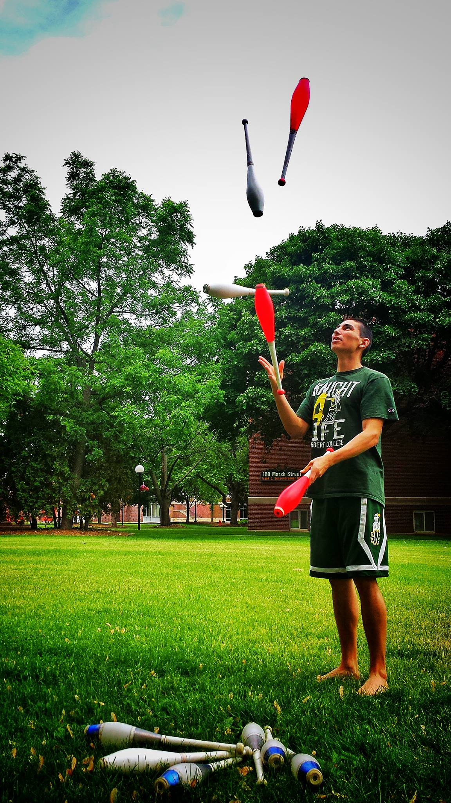

Who is Kyle Conniff?
If you want to know more about Kyle the human, read on!
Beyond teaching and academics, I have quite a few hobbies that generally fall under the umbrellas of athletics and nerdom.
An an athlete:
I played professional Ultimate for the Los Angeles Aviators from 2019-2021. As an undergraduate, I studied abroad in Perth, Australia where I learned how to play ultimate. Since then, I have spent way too much time focused on getting better at ultimate. It took three tries, before I made the Aviators in 2019. To the left is a photo from my first Game of the Week in front of an international audience (PC: Meg Hofner). This particular throw ended up making the top plays of the week (well, technically, the catch made the top plays of the week). The video is below.
 I have also been a semi-active juggler since 2009. My best friend in high school was one of the world's best jugglers at the time and we spent many hours every week working on the ultimate craft for introverts. The picture to the right (PC: Casey Rentmeester) is a classic 5 club cascade (cascade = the normal juggling pattern for an odd number of objects). My personal records are 9 balls, 7 rings, and 6 clubs. Presently, when I juggle I like to work on passing patterns (2 or more people juggling together by throwing objects back and forth) with 6, 7, and 8 clubs, or to play combat with 3 clubs.
As a nerd, I tend to like to escape reality:
When I am recovering from my more active endeavors, I enjoy watching anime. My favorites are old-school: Yu Yu Hakusho and Rurouni Kenshin. However, I have watched a lot of good anime and definitely recommend:
- Soul Eater
- Toradora
- Love, Chuunibyou & Other Delusions
- Prince of Stride: Alternative
- Jujutsu Kaisen.
Sticking with the theme of escapism, I love to read science fiction, fantasy, and dystopian future novels, especially in the young adult genre. I can get lost in 3-10 book series through which I feel a connection with the main characters. Some of my favorites include:
- The Name of the Wind (by Patrick Rothfuss)
- The Hunger Games (by Suzanne Collins)
- Graceling Realm (by Kristin Cashore)
- An Ember in the Ashes (by Sabaa Tahir)
- The Lorien Legacies (by Pittacus Lore)
- Red Rising Saga (by Pierce Brown)
My only vices come from having a bit of a card collection problem (Yu Yu Hakusho, Original Pokemon sets, and original Digimon sets...so far), and playing a relatively small and selective set of video games. I play Pokemon Go regularly. I am also working my way through the second gen Pokemon games and Mario Golf Color on the GameBoy Color. Additionally, I'm playing Hogwarts Legacy, Pokemon Legends Arceus, and Super Smash Bros Ultimate (Adventure Mode) on the Switch. Occassionally, I will sit down and play the worst platinum rank Rocket League this world has ever seen.
 I also am a dog parent. Drake is a ~14 year old pitbull-mix pound-rescue. Details of Drake's previous life are scarce, but it is believed that he ended up on the streets after having a few previous owners. Drake is now happy to play with his cousins (Kyle's parents' dogs) as well as whine about people not being awake on time, going to bed on time, letting him outside on time, feeding him on time, not paying him enough attention, or paying him too much attention.
I also am a dog parent. Drake is a ~14 year old pitbull-mix pound-rescue. Details of Drake's previous life are scarce, but it is believed that he ended up on the streets after having a few previous owners. Drake is now happy to play with his cousins (Kyle's parents' dogs) as well as whine about people not being awake on time, going to bed on time, letting him outside on time, feeding him on time, not paying him enough attention, or paying him too much attention.